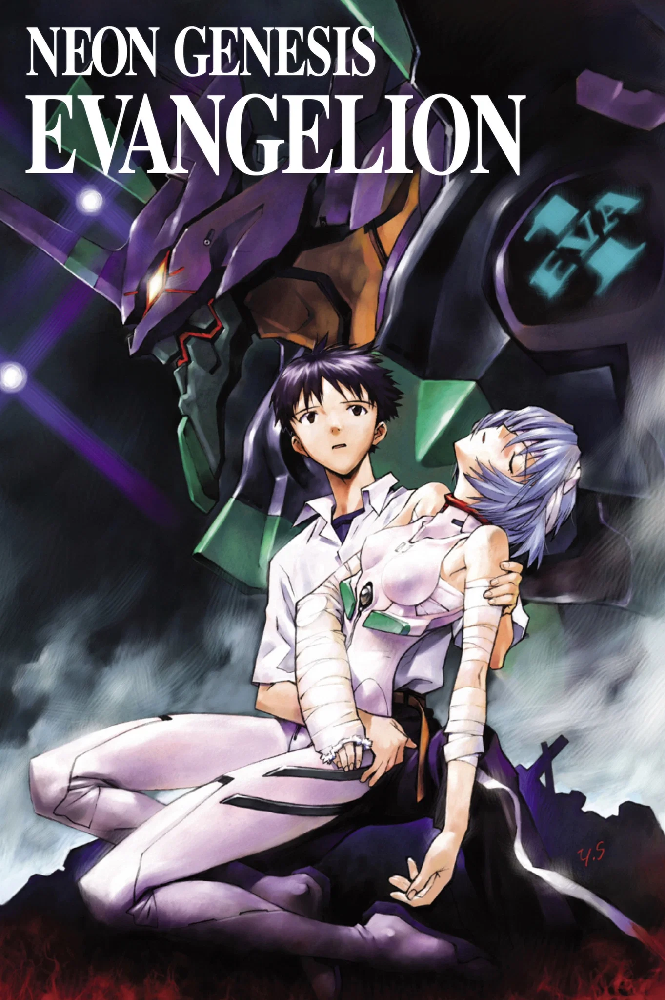
PRODUCTION INFORMATION
Development for this series began around 1993, and multiple formats were considered for it. Before being confirmed to be made as a TV series, the production team at Gainax considered formats like an OVA or a film, but ultimately landed on a TV series.
While production was mostly smooth for a good portion of the series, the lack of time allowed for later episodes managed to catch up to the studio, and the final two episodes specifically were released as an abstract and psychologically heavy climax. While there are rumors and speculation that the studio ran out of money, this was all a result of that lack of time available, but the staff involved managed to make something profound while under immense pressure.
However, the story's fully realized conclusion is contained in the sequel film THE END OF EVANGELION.
Learn more about THE END OF EVANGELION!Release Date: October 3, 1995
Series Length: 26 episodes
Director: Hideaki Anno
Studio: Gainax
STORY
In the year 2015, the Angels, huge, tremendously powerful, alien war machines, appear in Tokyo for the second time. The only hope for Mankind's survival lies in the Evangelion, a humanoid fighting machine developed by NERV, a special United Nations agency. Capable of withstanding anything the Angels can dish out, the Evangelion's one drawback lies in the limited number of people able to pilot them. Only a handful of teenagers, all born fourteen years ago, nine months after the Angels first appeared, are able to interface with the Evangelion. One such teenager is Shinji Ikari, whose father heads the NERV team that developed and maintains the Evangelion.
Thrust into a maelstrom of battle and events that he does not understand, Shinji is forced to plumb the depths of his own inner resources for the courage and strength to not only fight, but to survive, or risk losing everything.
CAST AND CREDITS
Original Work: Gainax
Direction: Hideaki Anno
Script/Screenplay: Hideaki Anno, Yoji Enokido, Akio Satsukawa, Mitsuo Iso, Hiroshi Yamaguchi, Shinji Higuchi
Mechanical Design: Ikuto Yamashita
Character Design: Yoshiyuki Sadamoto
Soundtrack: Shiro Sagisu
Storyboard: Masayuki, Hideaki Anno, Hiroyuki Ishidou, Kazuya Tsurumaki, Kiichi Hadame, Keiichi Sugiyama, Shinji Higuchi, Tsuyoshi Kaga, Tensai Okamura, Akira Oguro
Mechanical Animation Direction: Yoh Yoshinari
Animation Direction: Shinji Suzuki, Takeshi Honda, Noburo Hosoi, Satoshi Shigeta, Shinya Hasegawa, Toshio Kawaguchi, Kazuchika Kise, Mau Hanabata, Kazuya Tsurumaki, Masayuki
Episode Direction: Kazuya Tsurumaki, Hiroyuki Ishidou, Tsuyoshi Kaga, Keiichi Sugiyama, Seiji Mizushima, Tetsuya Watanabe, Tensai Okamura, Ken Andou, Masahiko Otsuka, Naoyasu Hanyuu, Minoru Ohara, Masayuki, Akira Takamura, Shouichi Masuo
Art Direction: Hiroshi Katou
IMAGE GALLERY
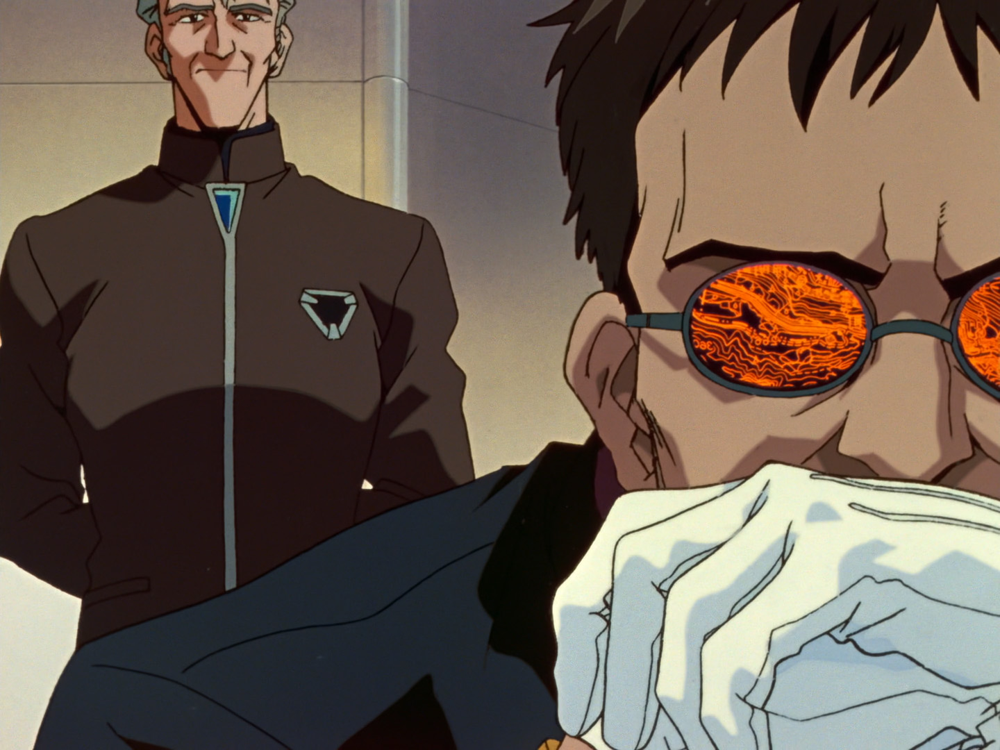
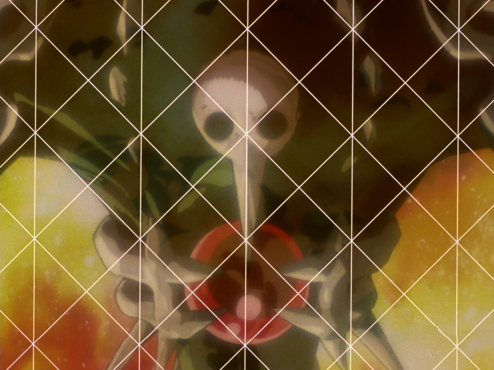
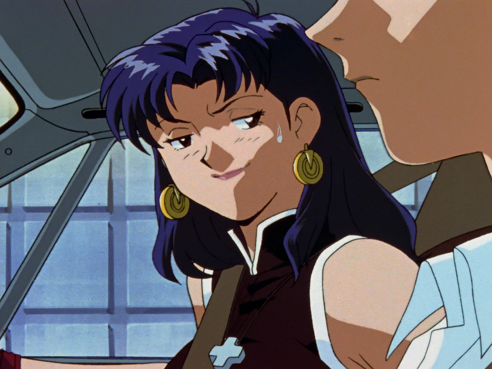
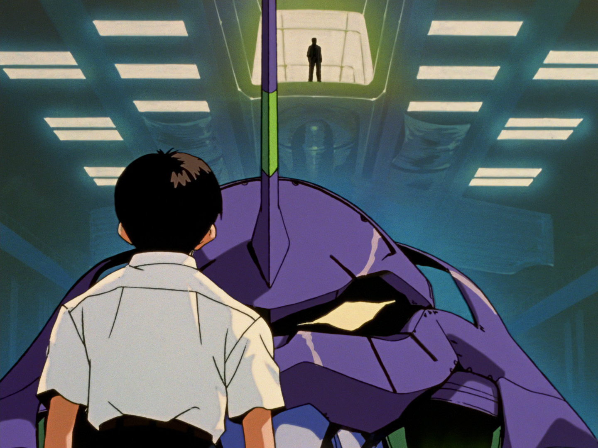
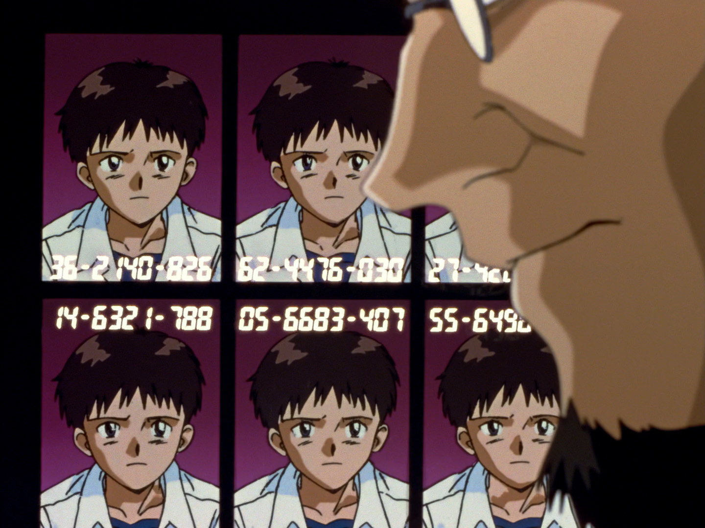
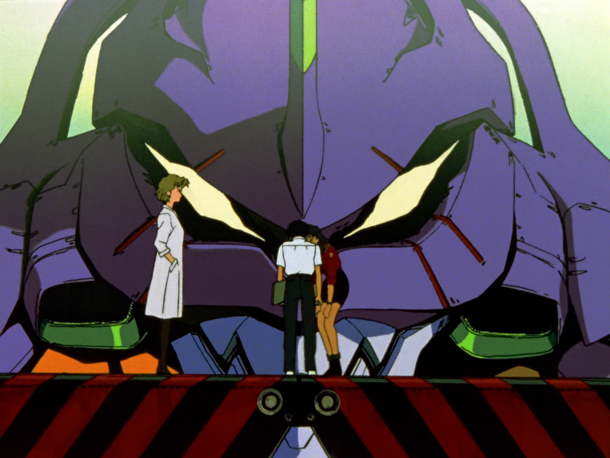
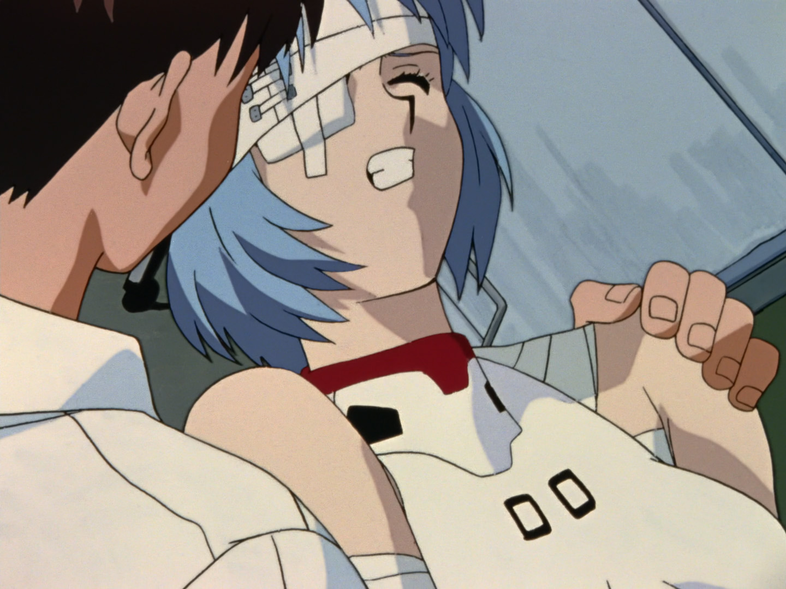
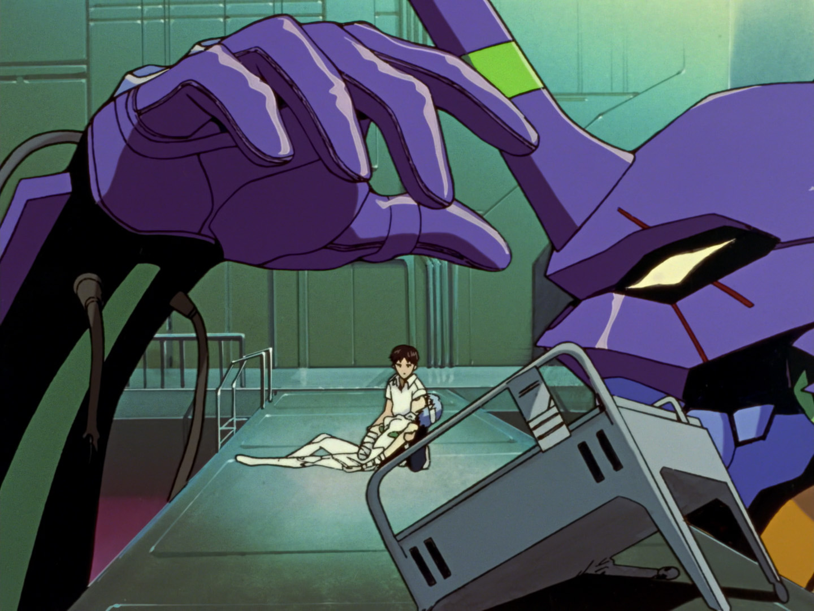
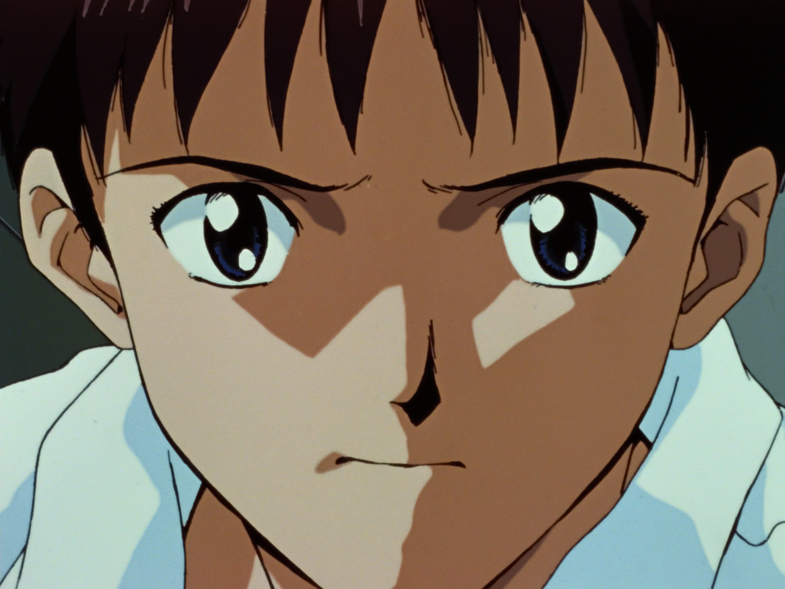
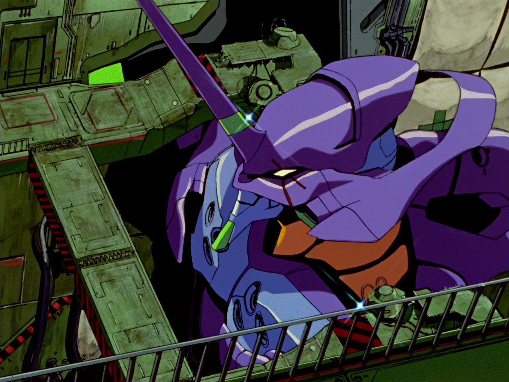